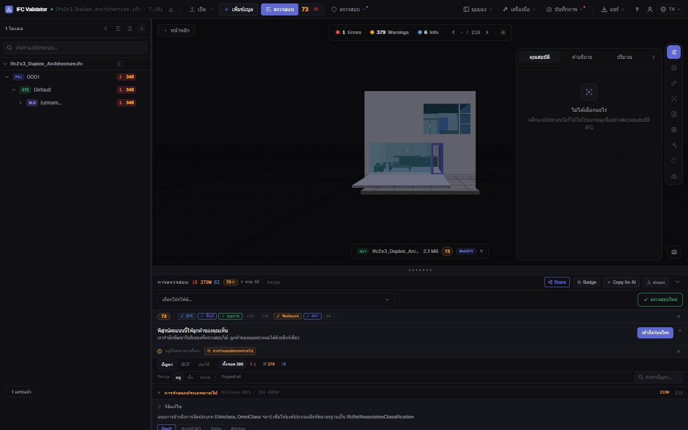
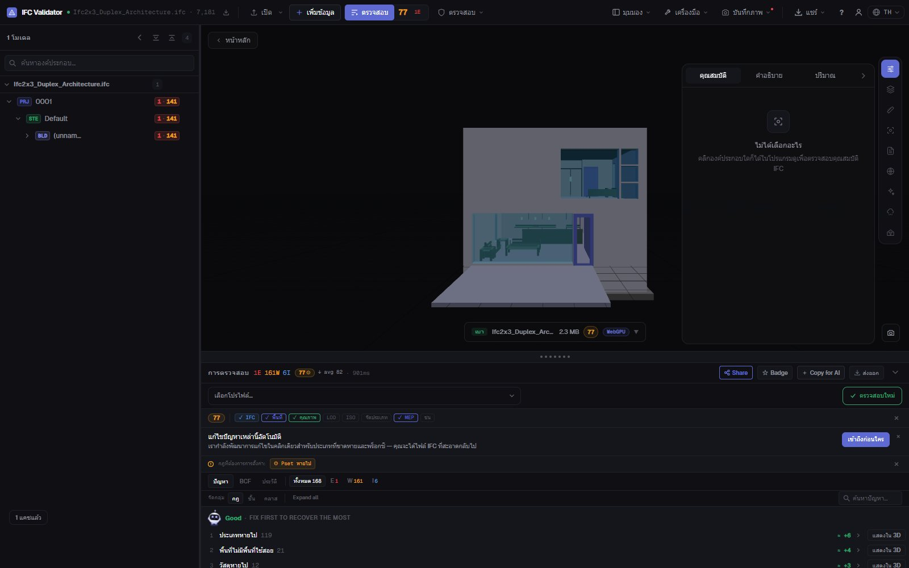

ตรวจสอบการจัดหมวดหมู่ IFC
Uniclass, OmniClass, Pset
ค้นหาทุกองค์ประกอบใน IFC ที่ไม่มีการอ้างอิงการจัดหมวดหมู่ (จากระบบใดก็ได้ หรือเฉพาะที่แผน BIM ของคุณกำหนด) พร้อมชุดคุณสมบัติที่ขาด ค่าว่าง และชื่อที่ไม่ตรงตามรูปแบบ ทุกผลลัพธ์จะถูกแสดงรายการ นับจำนวน และแสดงใน 3D
ตรวจสอบการจัดหมวดหมู่ — ฟรี →ไม่ต้องมีบัญชี · ไม่อัปโหลด · ทำงานในเบราว์เซอร์ · ฟรี

สิ่งที่ทำได้
ตรวจการจัดหมวดหมู่และข้อมูลก่อนส่งมอบ
สิ่งที่ผู้ประสานงาน BIM ตรวจก่อนรับโมเดลเข้าสู่ CDE
ไม่มีการจัดหมวดหมู่
ทุกองค์ประกอบทางกายภาพที่ไม่มี IfcClassificationReference จากระบบใดก็ได้หรือเฉพาะที่ระบุ (Uniclass 2015, OmniClass, CCS, NL-SfB…)
การจัดหมวดหมู่ด้วย IDS
โหลดไฟล์ IDS ของ buildingSMART เพื่อกำหนดระบบและรหัสตามประเภทองค์ประกอบ รองรับ facet การจัดหมวดหมู่ของ IDS ครบถ้วน
ตรวจชุดคุณสมบัติ
ชุดคุณสมบัติที่จำเป็นแต่ขาดหายและคุณสมบัติที่มีค่าว่าง แยกตามคลาสองค์ประกอบ
รูปแบบการตั้งชื่อ
ตรวจชื่อกับรูปแบบใน BEP ของคุณ รวมถึงชื่อว่างและชื่อซ้ำ (เปลี่ยนชื่อพร้อมกันได้)
แสดงใน 3D
แยกแสดงองค์ประกอบที่ไม่ผ่านการตรวจในโมเดล ส่วนที่เหลือโปร่งใส และข้ามไปยังแต่ละรายการได้
ส่งออกได้
ส่งผลลัพธ์เป็น BCF ให้ผู้สร้างโมเดล หรือดาวน์โหลด CSV รายงาน JSON หรือรายงานส่งมอบที่พิมพ์ได้
ภาพหน้าจอ

คำถามที่พบบ่อย
คำถามที่พบบ่อย
ตรวจสอบการจัดหมวดหมู่ของโมเดล IFC อย่างไร?
เปิด IFC ใน IFC Viewer Online แล้วตรวจสอบโดยเปิดกฎการจัดหมวดหมู่ (โปรไฟล์ ISO 19650 และการประสานงานมีกฎนี้) ระบบจะแสดงรายการองค์ประกอบที่ไม่มีการอ้างอิงการจัดหมวดหมู่และแสดงใน 3D หากต้องการกำหนดระบบและรหัสตามประเภทองค์ประกอบ ให้โหลดไฟล์ IDS
รองรับระบบการจัดหมวดหมู่ใดบ้าง?
ทุกระบบที่บันทึกเป็น IfcClassification / IfcClassificationReference: Uniclass 2015, OmniClass, CCS, NL-SfB, CoClass, MasterFormat หรือระบบของคุณเอง จะยอมรับทุกระบบหรือเฉพาะที่ระบุก็ได้
ตรวจชุดคุณสมบัติได้ด้วยไหม?
ได้ มีกฎตรวจ Pset ที่จำเป็นแต่ขาดและค่าว่าง และไฟล์ IDS สามารถกำหนดคุณสมบัติ ชนิดข้อมูล และค่าที่ต้องการได้
โมเดลถูกอัปโหลดไหม?
ไม่ การตรวจทำงานในเบราว์เซอร์ด้วย WebAssembly ไฟล์ IFC ไม่ออกจากคอมพิวเตอร์ของคุณ ใช้ได้ฟรีทุกกรณี ไม่ต้องมีบัญชี
แชร์ผลลัพธ์กับผู้สร้างโมเดลได้ไหม?
ได้ ส่งออกเป็น BCF 2.1 สำหรับโปรแกรมของเขา หรือเป็น CSV, JSON หรือรายงานส่งมอบที่พิมพ์ได้
รู้ว่าอะไรยังไม่ได้จัดหมวดหมู่ ก่อนที่โมเดลจะถึง CDE
การจัดหมวดหมู่ · Pset · การตั้งชื่อ · IDS · BCF
ตรวจสอบการจัดหมวดหมู่ — ฟรี →